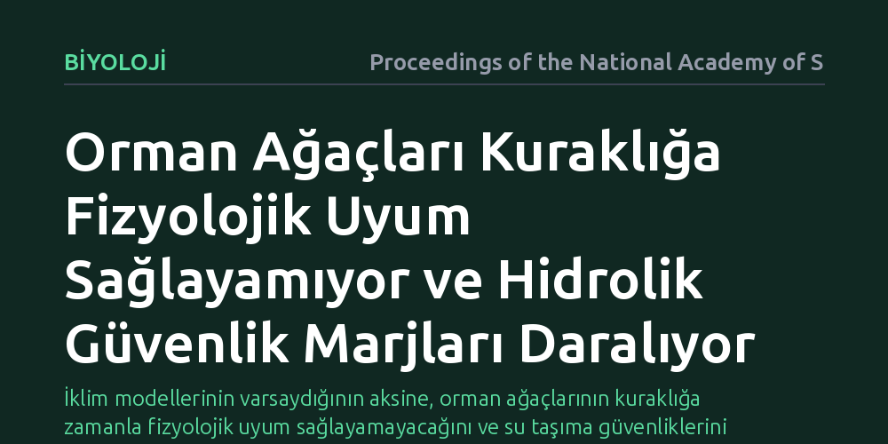

BIYOLOJI · Proceedings of the National Academy of Sciences · 2026-09-08
Araştırmacılar, orman ağaçlarının kuraklığa fizyolojik uyum sağlayıp sağlayamadığını küresel saha deneyleriyle inceledi. Sonuçlar, ağaçların kuraklık karşısında işlevsel uyum geliştiremediğini ve kuraklaşan dünyada hidrolik güvenlik marjlarının azalarak ölüm risklerinin arttığını gösterdi.
İklim modellerinin varsaydığının aksine, orman ağaçlarının kuraklığa zamanla fizyolojik uyum sağlayamayacağını ve su taşıma güvenliklerini kaybederek toplu ölümlere karşı giderek daha savunmasız hale geldiğini gösterir.

İklim değişikliğiyle birlikte dünya genelinde kuraklıkların sıklığı, süresi ve şiddeti hızla artmaktadır. Karasal karbon yutağı olan ve gezegenin biyolojik çeşitliliğine ev sahipliği yapan orman ekosistemlerinin geleceği bu değişimden doğrudan etkilenmektedir. Mevcut iklim ve ekosistem modellerinin önemli bir kısmı, ağaçların artan kuraklık koşullarına zamanla fizyolojik olarak alışabileceğini ve işlevlerini bir şekilde sürdürebileceğini varsaymaktadır.
Ancak bu noktada yanıtlanması gereken temel bir soru bulunmaktadır: Orman ağaçları artan su stresine karşı gerçekten fizyolojik bir uyum geliştirerek su taşıma sistemlerini koruyabiliyor mu, yoksa kuraklık şiddetlendikçe geri dönülemez bir kırılma noktasına mı yaklaşıyorlar? Bu sorunun cevabı, küresel ormanların çöküş riskini ve iklim krizine karşı direncini doğru öngörebilmek için hayati bir önem taşımaktadır.
Araştırmacılar bu soruyu laboratuvarda saksı içinde yetiştirilen fidelerle değil, gerçek dünyadaki doğal orman ekosistemlerinde test etti. Dünyanın farklı kıtalarında ve çeşitli orman biyomlarında yürütülen yerinde (in-situ) kuraklık ve yağmur engelleme deneylerinden elde edilen veriler sistematik olarak bir araya getirildi.
Bu deneysel sahalarda, ağaçların köklerinden yapraklarına su ileten odun dokularındaki (ksilem) gerilimler, yaprakların terleme kontrolleri ve kuraklık stresi altındaki hidrolik iletim kapasiteleri doğrudan ölçüldü. Böylece ağaçların doğal orman koşullarında uzun süreli su kıtlığına maruz kaldıklarında kuraklığa karşı koyma eşiklerinde herhangi bir esneme ya da iyileşme olup olmadığı incelendi.
Elde edilen bulgular, yaygın beklentilerin aksine ağaçlarda belirgin bir fizyolojik uyum eksikliği olduğunu gösterdi. Ağaçların su kıtlığı karşısında su iletim dokularını daha dirençli hale getirecek işlevsel bir ayarlama yapamadığı saptandı; sahada yapılan ölçümler ağaçlarda "işlevsel bir uyum eksikliği" bulunduğunu ortaya koydu. Ağaçların kuraklığa dayanıklılık eşikleri sabit kalırken, çevre giderek kuraklaştığı için hidrolik güvenlik marjları hızla daralmaktadır.
Ağaçlar suyu yapraklara taşırken odun borularında oluşan yüksek negatif basınca dayanmak zorundadır. Kuraklık arttığında toprak kurur ve bu gerilim kritik bir seviyeyi aşarsa iletim borularında hava kabarcıkları oluşarak su akışı kesilir (emboli). Ağaçların bu kırılma eşiğini kuraklığa göre daha güvenli bir seviyeye çekememesi, kuraklaşan bir dünyada ağaçların su taşıma güvenliğini doğrudan tehlikeye atmaktadır.
Bu bulgu, mevcut küresel iklim ve bitki örtüsü modellerinin temel varsayımlarını sorgulatmaktadır. Ağaçların kuraklığa zamanla alışacağını varsayan modeller, ormanların karbon tutma ve hayatta kalma kapasitelerini olduğundan daha iyimser tahmin etme riski taşımaktadır. Fizyolojik uyumun gerçekleşmemesi, gelecekteki kuraklık dönemlerinde beklenenden çok daha erken ve yaygın ağaç ölümleri yaşanabileceğini göstermektedir.
Sonuç olarak ormanlar, artan kuraklık karşısında kendi fizyolojileriyle sürekli esneyebilen sınırsız bir uyum gücüne sahip değildir. Orman koruma stratejilerinde ve iklim değişikliği politikalarında ağaçların bu sabit biyolojik sınırlarının dikkate alınması, ekolojik risklerin gerçekçi bir şekilde yönetilmesinde belirleyici olacaktır.